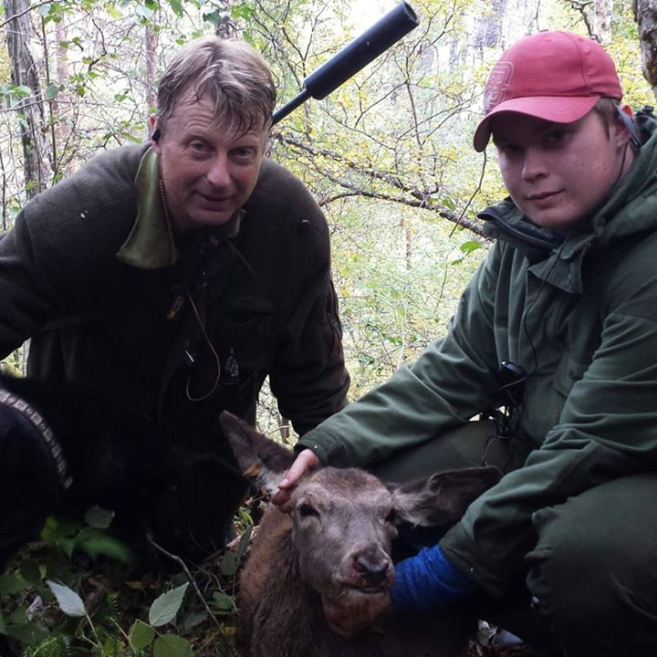

News
>
Team
>
Pontius
Pontius

NAME
Embrik "Pontius" Einang
AGE
20
FROM
NORWAY
"It's never too early to quit."
Past achievements
Never played a game of Starcraft to the end
Bought Blizzcon-ticket 2014
First person to quit in Beta
SOCIAL MEDIA
facebook.com/pontius
STREAM